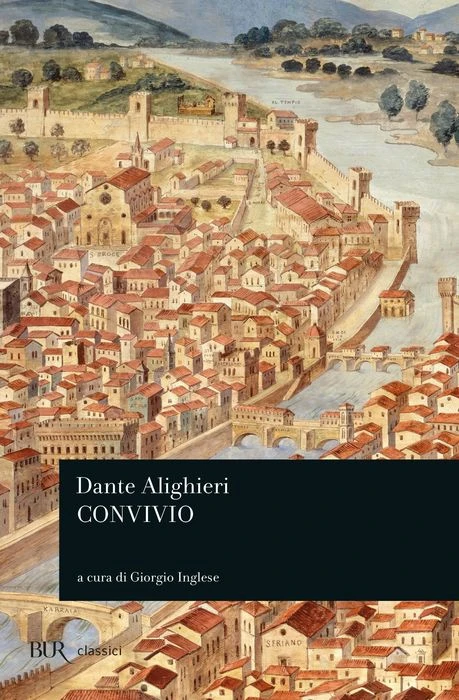
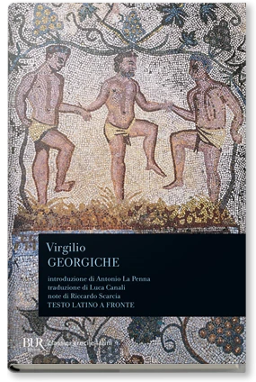

21:28 · 4 OPERE
Boezio, La Consolazione della Filosofia
Il filo del discorso
La Consolazione della filosofia viene presentata come un incontro tra riflessione, poesia ed esperienza della prigionia. Dopo il profilo di Boezio e un richiamo alla sua ricezione in Dante, il contributo segue la figura della Filosofia che visita e consola l’autore. Le sue vesti lacerate diventano l’immagine di un sapere utilizzato per interessi estranei alla ricerca della conoscenza. Il commento si concentra poi sul rapporto tra bene, male e natura umana: la malvagità è letta come perdita dell’umanità, mentre il tiranno appare prigioniero delle proprie passioni. Le letture dal testo mettono in evidenza anche gli echi classici, soprattutto di Virgilio. La conclusione invita a tornare al libro per confrontarsi con il problema del male attraverso il ragionamento e il cambiamento di prospettiva.
I libri nel discorso

La consolazione della filosofia
Copertina: Bompiani, 2019
Titolo latino, traduzione italiana e autore espliciti in apertura; opera letta e commentata per l’intero contributo.
Passaggio 0:13 ↗ · Fonti e libro ↗
Gli elementi
Copertina: Bompiani · Tutte le opere, raccolta contenente Gli elementi
La copertina illustra la raccolta Tutte le opere, che include Gli elementi; non è attribuita al video.
Titolo e autore espliciti nell’accenno agli studi matematici di Boezio; è un richiamo, non un libro mostrato o recensito.
Passaggio 1:38 ↗ · Fonti e libro ↗
Convivio
Copertina: BUR · a cura di Giorgio Inglese
Dante e Convivio espliciti nel richiamo alla ricezione di Boezio, ripresi a 147–158 secondi.
Passaggio 1:56 ↗ · Fonti e libro ↗
Georgiche
Copertina: BUR, 1983
Titolo, autore e libro secondo sono espliciti nel confronto tra un passo di Boezio e il verso virgiliano.
Passaggio 12:21 ↗ · Fonti e libro ↗